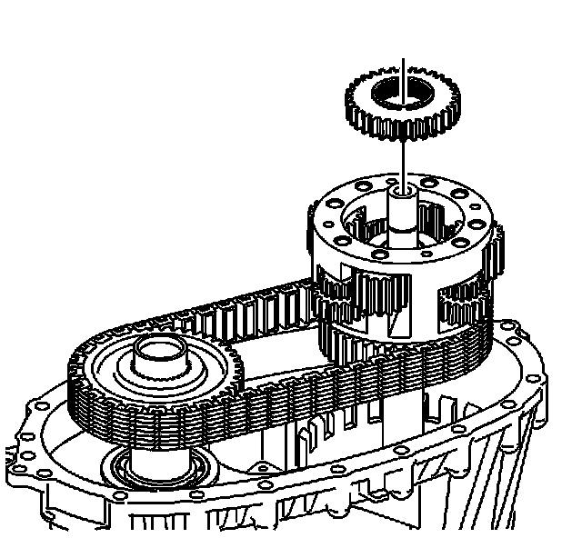

Transfer Case Disassemble
Transfer Case Disassemble
Tools Required
^ J 2619-01 Slide Hammer
^ J 3289-20 Holding Fixture
^ J 26941 Bushing and Bearing Remover - 3-4 inch
^ J 45124 Puller Bridge
^ J-45124-9 Puller Legs
^ J 45358 Case Spreader
^ J 45380 Transfer Case Rear Bushing Remover and Installer
^ J 45548 Mainshaft Support Bushing/Bearing Remover
^ J 45759 Assembly Fixture
1. Attach the J 45759 to the transfer case using the adapter studs. All of the transfer case disassembly procedures can be performed with the case mounted to the J 45759.
2. Mount the J 3289-20 (1) to a sturdy workbench.
3. Install the J 45759 (2) into J 3289-20 (1) and secure with pivot pin.

4. Remove the drain plug and the fill plug. Ensure all of the transfer case fluid is drained out of the transfer case.
Notice: Refer to Transfer Case Seal Removal Notice.
Important: The front output shaft seal is a two piece internal seal. The inner seal race is a force fit on the front output shaft.
5. Remove the front output shaft seal by inserting a flat-tip screwdriver behind the inner race of the seal.
6. Pry the inner seal race forward.
7. Using a small pry bar, move the inner seal race forward on the front output shaft.
8. Remove the inner seal race from the front output shaft.
9. Insert a flat-tip screwdriver or a small pry bar between the outer lip of the front output shaft seal and the transfer case.
10. Remove the remaining part of the front output shaft seal from the transfer case.
Notice: Refer to Transfer Case Seal Removal Notice.
11. Remove the rear output shaft seal by prying it out with a flat-blade screwdriver.

12. Remove the transfer case retaining bolts and washers.
Mark the location of the brackets.
Notice: Refer to Machined Surface Damage Notice.
13. Using the J 45358 between the tabs on the case halves, shear the sealer that is holding the case halves together.
14. Using pry bars at each side of the case, remove the case from the locating pins.

15. Remove the rear case half from the front case half. The rear output shaft will come with the rear case half.

16. Remove the rear sun gear.
17. Remove the sun gear thrust washer.

18. Remove the planetary differential assembly.
19. Remove the front sun gear.
Important: If the chain and sprockets are to be used again, mark the relationship of the chain to the sprockets in order to mark the wear patterns.
20. Remove the chain with the drive sprocket and driven sprocket.
21. Remove the input shaft.

22. Remove the front output shaft assembly.
23. If the cup plug in the front output shaft is leaking, remove the plug using a brass drift.
24. Using a hammer and a suitable punch, remove the input seal.
25. Using the J 26941 (3), the J 45124 (1), and the J-45124-9 (2), remove the input shaft bearing for the front input shaft from the front case.

26. Using a brass drift, remove the front output shaft bearing from the front case half.
27. If necessary, remove the vent from the front case half.
28. Using J 45380, remove the rear output shaft bushing.
29. Remove the rear output shaft from the rear case half.
1. Spread the rear output shaft rear bearing outer retaining ring.
2. Using a soft-face hammer, tap on the end of the rear output shaft.

30. Remove the retaining ring for the rear output shaft bearing.
31. Using a hydraulic press, remove the rear output shaft bearing.
32. Inspect the mainshaft rear support bushing in the rear output shaft for being faulty. Refer to Cleaning and Inspection.
33. Using the J 2619-01 (1) and the J 45548 (2), remove the mainshaft rear support bushing from the rear output shaft.
34. Using the J 26941 (3), the J 45124 (1), and the J-45124-9 (2), remove the rear bearing for the front output shaft from the rear case.